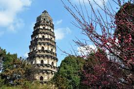

Tiger Hill
Tiger Hill, known as Huqiu in Chinese, is a picturesque hill and garden located in Suzhou, a city renowned for its classical gardens and water towns. It is one of the most popular tourist attractions in Suzhou, attracting visitors with its natural beauty and historical significance.
The hill is named after a legend that claims a white tiger once inhabited the area. Standing at around 36 meters high, Tiger Hill offers panoramic views of its surroundings and is often referred to as the "No. 1 Sight of Suzhou." The lush greenery, ancient trees, and vibrant flowers create a tranquil and enchanting atmosphere.
Humble Administrator's Garden
The Humble Administrator's Garden, known as Zhuozheng Yuan in Chinese, is a masterpiece of classical Chinese garden design located in Suzhou, a city renowned for its elegant gardens. It is recognized as one of the most famous and influential gardens in China and has been designated as a UNESCO World Heritage Site.
The garden was originally built during the Ming Dynasty in the early 16th century and has undergone various expansions and renovations over the centuries. It covers an area of approximately 5.2 hectares and is divided into three main sections: the eastern, central, and western parts.

Lingering Garden
The Lingering Garden, known as Liu Yuan in Chinese, is a masterpiece of classical Chinese garden architecture and design. Located in Suzhou, a city renowned for its classical gardens, the Lingering Garden is considered one of the four most famous gardens in China.
Originally built during the Ming Dynasty, the Lingering Garden has a rich history spanning over 400 years. It covers an area of about 23,310 square meters and is divided into four main sections: the Central Courtyard, Eastern Garden, Western Garden, and Northern Garden.

Master of the Nets Garden
The Master of the Nets Garden, known as Wang Shi Yuan in Chinese, is a UNESCO World Heritage Site and one of the most exquisite classical gardens in Suzhou. Originally built during the Song Dynasty, it is a masterpiece that exemplifies the delicate artistry and craftsmanship of traditional Chinese gardens.
The garden covers an area of about 5,400 square meters and is renowned for its small size yet exquisite design. It is divided into three main sections: the residential area, the central garden, and the inner garden.
The Master of the Nets Garden is celebrated for its seamless integration of architecture, water features, and landscaping. It features a variety of pavilions, halls, rockeries, and ponds, creating a harmonious composition that reflects the balance between man-made elements and nature.